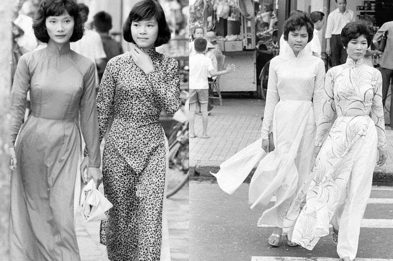
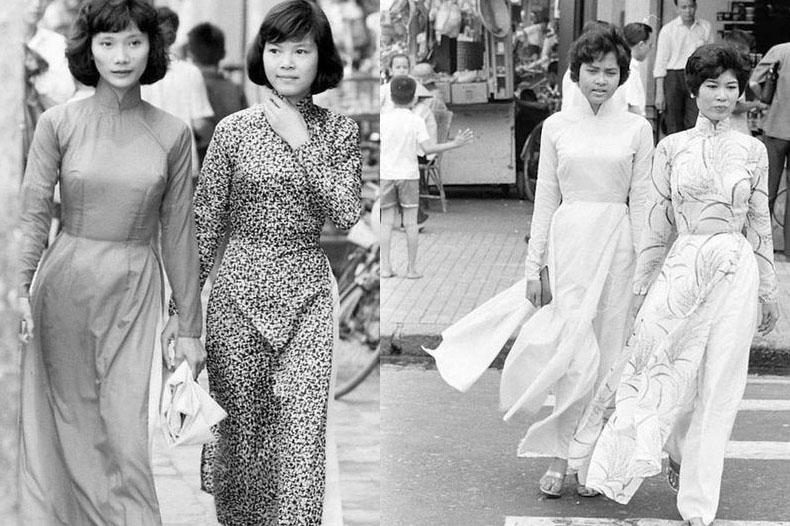

丸くて柔らかく、甘みのある米粉のローリングケーキ、中に入っている揚げたタマネギの香り豊かな味は、
多くのベトナム人が豊かでエレガントな風味を好み日常的に食べているスナックです。

ハノイはベトナムの首都で、100 年ほどの歴史がある建築物や、
東南アジア、中国、フランスの影響を受けた豊かな文化で知られています。
中心部にある旧市街は、狭い道が入り組んだ一角ですが、古くから同業組合ごとに区分されています。
また、家庭用品の店や屋台が出るドンスアン市場があります。
小さな寺院も多く、そのひとつ、白馬最霊時祠には伝説の馬が祀られています。

丸くて柔らかく、甘みのある米粉のローリングケーキ、中に入っている揚げたタマネギの香り豊かな味は、
多くのベトナム人が豊かでエレガントな風味を好み日常的に食べているスナックです。
フォーは、ベトナムの3つの地域すべてにある料理です。
牛肉（または鶏肉）の甘さが、シナモン・スターアニス・
タマネギ・牛肉などをハーブと組み合わさることで、甘いスープに仕上がり、
多くの人に好まれています。 しかし、
最も人気のあるフォーは北部地方にあります。 中部地方では、フエのビーフヌー
ドルスープまたはホイアンパンが最もよく見られます。
一方、南部の人々は、仕事に行く前に麺、砕いたご飯、またはパンを食べてコーヒ
ーを飲むことを好みます。


電車
車両にはドライバー席を含む各8席があり、車には観光客が街の景色を楽しむための窓がなく、低速で走るため非常に安全です。ボイスオーバースピーカーシステムもあり、観光客が行く場所について詳しく知ることができます。

ｼｯﾛ
シッロ旅行は、外国人旅行者が非常に興味を持っています。そのため、ハノイの旧市街やホアンキエム湖周辺を訪れると、街を探索しているシッロ観光に来ている外国人観光客を多く見かけます。

バス
ハノイをカバーする100を超える公共バス路線のネットワークは、観光客が首都の有名なランドマークを訪れるのに非常に便利で経済的です。

ノンラーは、ベトナムの女性の美しさを称えるのに必要不可欠です。ロングドレス、ノンラ－は、穏やかで繊細なベトナム人女性の標準的なイメージになっています。ロングドレスが女性のエレガントな美しさ、優雅さを高めます。また、女性に隠された美しさ、タイトではるかに魅力的なものをもたらします。

蓮茶は、プレミアムプレミアムドリンクとして、楽しむために長い間ベトナム人に好まれています。 蓮茶は、治療薬と考えられています。緑茶と蓮の花から結晶化された蓮茶には、健康に非常に有益な多くの有効成分が含まれています。

ベトナムの豊かな文化を学ぶために、外国人はそれらの衣装について学ぶのが大好きです...。そして、素敵なドレスとノンラーをかぶった小さな人形は魅力的な贈り物です。

ときどきいただくハノイ土産のお菓子、バイン・コム（Banh Com）は、 緑色の若いお米で作ったぷるぷる生地に、緑豆あんを包んだもの。 緑豆あんは白あん風で、 あんを包むぷるぷるな生地はういろう風なので、 「おやおや、和菓子かな？」という気持ちになります。 パッケージにある「寧源」は、有名なバイン・コム屋さんなんだとか。 「ネイゲン」とは読まず、ベトナム語では「グエン・ニン」と読みます。
 

Hanbookが韓国の伝統衣装である場合、着物は日本『太陽が昇る国』の民族衣装であり、ベトナムのアオザイは民族のアイデンティティを吹き込んだ文化的な息吹を持つ民族衣装です。アオザイは美人コンテストの衣装に使用され、その美しさを世界各国の人々から賞賛されることを光栄に思っています。


伝統的なアオザイは女性の美しさを否定することはできません。アオザイは、休暇中、講堂などで女性が着用します。 現代のファッションに合わせて、ドレスがリニューアルされました。シャツの一部から、襟・袖・トランク・ボタン、またはパンツを合わせて着用します。